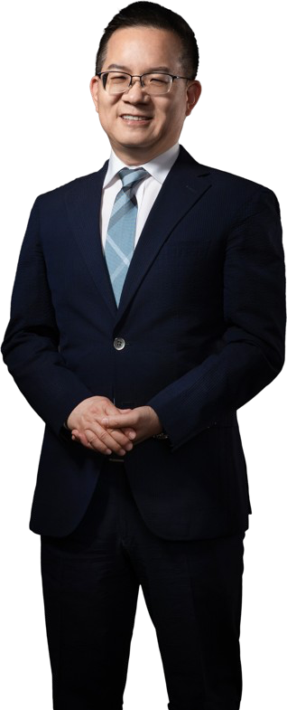

Về Người Sáng Lập

Bước Ngoặt Cuộc Đời
Tôi thuộc thế hệ giữa thập niên 50, quá trình trưởng thành, học tập đến lập nghiệp đều khá thuận lợi. Những năm gần đây, với sự phổ biến của cụm từ "nhóm chiến thắng cuộc đời", thỉnh thoảng tôi không thể tránh khỏi suy nghĩ, liệu mình có đủ tư cách để thuộc về nhóm đó không? Cuộc sống chiến thắng, ai mà không ngưỡng mộ. Tuy nhiên, tôi tin rằng thắng bại trong cuộc đời, điều quan trọng nhất không phải là có quan niệm năng lượng tích cực hay không, nghĩa là, tôi có nên suy nghĩ về bước ngoặt cuộc đời xảy ra khi nào không? Tôi chọn con đường cuộc đời nào?
Hai mươi năm trước khi thành lập T&E Global, đúng vào thời kỳ vàng của sự cất cánh kinh tế Đài Loan, tôi làm việc tại các công ty nước ngoài và công nghệ cao nổi tiếng, giữ chức quản lý chuyên nghiệp, tôi rất thích môi trường làm việc chăm chỉ và nghiêm túc đó, và may mắn là, cha mẹ khỏe mạnh, khiến tôi không có lo lắng gì, tập trung vào sự nghiệp. Lúc đó tôi cảm thấy may mắn, tương lai của tôi sẽ là một đường cong tăng trưởng đi lên. Tuy nhiên, từ năm 30 tuổi, huyết áp cao, tiểu đường, bệnh tim đã lần lượt tìm đến mẹ tôi, chỉ sau hai năm ngắn ngủi, bà đã phải bước vào con đường khó khăn của việc chạy thận.
Thế hệ cha mẹ tôi, nửa đầu đời thiếu thốn vật chất, sống khó khăn nhưng lạc quan, nhưng nửa sau đời được hưởng lợi từ xã hội giàu có, có hệ thống y tế chất lượng và tiện lợi để dựa vào, là con út, tôi tự nhiên gánh vác trách nhiệm đồng hành với mẹ đi khám bệnh. Việc điều trị bệnh mãn tính là dài dẳng, rất dễ khiến người ta chán nản, tâm trạng theo sự thay đổi của tình trạng bệnh, cộng với mong muốn chữa bệnh nóng vội, cũng đặc biệt dễ bị những người có ý đồ lợi dụng.
Tôi nhớ rõ ngày đó, ngày 12 tháng 5 năm 2002, Ngày của Mẹ, tôi xin nghỉ bốn giờ từ bệnh viện Quốc Thái Nội Hồ nơi mẹ đang nằm viện, đưa bà ra ngoài đến nhà hàng gần đó, cùng cả gia đình tận hưởng khoảng thời gian vui vẻ. Sau bữa ăn, khi chúng tôi đỡ mẹ rời đi, một cặp vợ chồng trung niên chủ động đến nói chuyện với chúng tôi, chân thành nói rằng mẹ họ cũng mắc nhiều bệnh tương tự, không thể đi lại, đã đi khắp các bác sĩ nổi tiếng nhưng không có cải thiện gì, may mắn được một người bạn tốt giới thiệu, có một loại thực phẩm chức năng, hiệu quả rất tốt, sau đó đưa cho tôi một tấm danh thiếp in tên tổ chức Tân Học Hữu, yêu cầu tôi nếu cảm thấy cần thì liên hệ với họ bất cứ lúc nào. Cùng cảnh ngộ, sau khi trở về bệnh viện, tôi nhìn đi nhìn lại tấm danh thiếp đó, bỗng trong lòng nảy sinh hy vọng, không ngừng phát triển, nghĩ rằng đây có phải là quý nhân giúp đỡ không, tôi tin rằng đây thực sự là một cơ hội để mẹ thoát khỏi bệnh tật. Tất nhiên, sau khi tôi chuyển ba mươi nghìn đồng đến tài khoản mà họ chỉ định, hai ngày sau nhận được một gói thuốc trông rất đáng ngờ, tôi mới tỉnh ngộ như từ giấc mơ, nhận ra mình đã bị lừa. Mặc dù căm ghét đối phương lợi dụng tâm lý dễ tổn thương của người thân bệnh nhân, nhưng tôi cũng khá hối hận vì sao lúc đó mình lại mất lý trí như vậy.
Nhưng họa phúc đi đôi, kinh nghiệm bị lừa này lại là một bước ngoặt quan trọng trong cuộc đời tôi.
Mục Đích Ban Đầu Của Người Bảo Vệ Sức Khỏe Nhân Loại
Những năm tháng đồng hành với mẹ thường xuyên ra vào bệnh viện, nhìn những tòa nhà y tế được phân loại, dòng người như chợ, nỗi đau mà các bệnh tật mang lại cho con người, tôi luôn cảm thấy rất nhiều, sinh, lão, bệnh, tử, thực sự là chu kỳ tự nhiên, là quá trình tất yếu của cuộc sống. Tôi cũng vì vậy mà tình cờ biết được, biểu tượng của y học phương Tây, là một con rắn quấn quanh một cây gậy, ý nghĩa là gì? Hóa ra cây gậy đại diện cho cột sống của con người, cũng đại diện cho sự tiến hóa và sự nâng cao tinh thần; còn con rắn mỗi năm đều lột da, tượng trưng cho quá trình phục hồi, đổi mới và tái sinh. Biểu tượng đẹp biết bao, chứa đựng tư tưởng sâu sắc. Tục ngữ nói: "Người ăn ngũ cốc, làm sao không bệnh?" Biểu tượng y học của cây gậy rắn, ý nghĩa lớn, chẳng phải là biểu tượng của cuộc đời con người sao? Từ tuổi ấu thơ đến thời thơ ấu, thanh thiếu niên, tráng niên, trung niên, lão niên, theo thời gian phát triển, trên đường đi không thể không thay đổi, không thất bại, không tổn thương, càng không thể không đổi mới, không chuyển hóa, không tái sinh.
Đó là lý do tại sao tôi cho rằng năm 2002, vì mẹ mà bị lừa mua thuốc giả, là một bước ngoặt quan trọng trong cuộc đời tôi.
Một ngày bình thường vào tháng 7 năm 2003, tôi và một người quản lý quen biết trong một bữa ăn, đã thảo luận sâu sắc về thế kỷ 21 vì tuổi thọ tăng và y dược phát triển, sẽ là thời đại thịnh vượng của ngành công nghệ sinh học và sức khỏe. Lời nói đó, như một hạt giống kỳ diệu được gieo vào lòng tôi.
Chưa đầy năm tháng sau, cuối năm 2003, có lẽ vì sự tập trung tâm trí và ý chí của tôi, nhân duyên tình cờ, đã đánh thức quyết tâm khởi nghiệp của tôi. Những năm trước đó chăm sóc mẹ bệnh, đồng hành với bà trong hành trình tìm kiếm điều trị, càng là ngọn lửa đốt cháy tham vọng khởi nghiệp của tôi.
Triết Lý Người Sáng Lập
Lấy Tín Lấy Đức Làm Phong Phú Cuộc Sống
Ngày 2 tháng 12 năm 2003, T&E Global chính thức khai trương. Mặc dù đối với tôi lúc đó, ngành công nghiệp công nghệ sinh học và sức khỏe là một lĩnh vực hoàn toàn xa lạ, may mắn là tôi có mạng lưới quan hệ tích lũy nhiều năm, nhiều chuyên gia xuất sắc đã hỗ trợ tôi hết mình, kết hợp đội ngũ nghiên cứu và phát triển xuất sắc, phát triển sản phẩm tốt, cuối cùng đã thành công.
Tôi kiên trì với hai triết lý cốt lõi của việc khởi nghiệp: lấy "tìm hy vọng vô hạn cho những người bất lực" làm mục đích ban đầu, kỳ vọng trở thành "người bảo vệ sức khỏe nhân loại".
Niềm tin đúng đắn tạo ra năng lượng tích cực, mới có thể tập hợp những người bạn đồng chí hướng, cùng bước lên con đường thực hiện lý tưởng. Đồng nghiệp và tôi, chân thành kỳ vọng mang lại sức khỏe cho mọi người, tự nhận "T&E Global" đầy trung thực và yêu thương, quá trình bán hàng tuyệt đối không phóng đại, tuyệt đối không gian dối, tín dụng là trên hết, phải phát huy tình yêu, sự quan tâm và sức sống, giúp đỡ những người cần giúp đỡ.
Tên "T&E Global", nhìn chữ hiểu nghĩa, chính là nguyện vọng của tôi lấy tín lấy đức làm phong phú cuộc sống.
Hành Trình Phát Triển: Sản Phẩm Tốt Mới Là Vương Đạo
Từ khi bước vào xã hội làm việc, thăng tiến lên quản lý chuyên nghiệp, đến tự mình khởi nghiệp, vận hành của hệ thống kinh doanh, điều nhận thức vững chắc nhất mà tôi có được là, "sản phẩm tốt mới là vương đạo", đây là chân lý vĩnh cửu. Đây cũng là chìa khóa chính giúp "T&E Global" có thể trong thời gian ngắn vài năm, xây dựng danh tiếng tốt trên thị trường, nhận được sự ủng hộ và khẳng định rộng rãi.
Năm thứ tư tôi khởi nghiệp, ngày 18 tháng 6 năm 2007, đã lập kỷ lục doanh thu trong ngày vượt một triệu. Thành thật mà nói, niềm vui chỉ là nhất thời, sau đó tôi lại cảm thấy nặng lòng, vì hiện tượng "lấy số lượng định giá" trong ngành khiến tôi rất bối rối, nghĩa là, càng có tài chính mạnh, càng có thể lấy chiết khấu làm danh nghĩa, mua được sản phẩm rẻ. Hiện tượng khó chịu này, giống như quy luật rừng rậm, vi phạm mục đích ban đầu khi tôi khởi nghiệp, khiến tôi cảm thấy không nỡ và đau khổ đối với những người yêu mến "T&E Global".
Không lâu sau, một cặp anh em đến thăm tôi, hỏi tôi có quan tâm đến kênh bán hàng trực tiếp không? Tôi vốn rất bài trừ bán hàng trực tiếp, nghĩ làm sao có thể, lập tức từ chối. Tuy nhiên, cặp anh em này lại nói với tôi, nếu có một hệ thống bán hàng không cần tăng giá, lại có thể phù hợp với "công bằng và công lý", bạn có quan tâm không?
Ngày 22 Tháng 6 Năm 2007: T&E Global Chuyển Đổi Sang Bán Hàng Trực Tiếp Vì Công Bằng Và Công Lý
"Công bằng và công lý"! Điều này đã đánh động tôi rất nhiều. Sau khi hiểu rõ toàn bộ, tôi quyết định lấy đây làm nguyên tắc bán hàng, như vậy, tôi và "T&E Global" đã đến một bước ngoặt khác, chính thức mở ra cuộc đời bán hàng trực tiếp của tôi. Tôi sâu sắc kỳ vọng bản thân, xây dựng một công ty bán hàng trực tiếp khác biệt, dùng những hành động thực tế mà mọi người có thể nhìn thấy và cảm nhận được, để chỉnh đốn quan điểm của mọi người về bán hàng trực tiếp. Tôi càng kỳ vọng "T&E Global" một ngày nào đó trở thành "Amway" của xã hội người Hoa, để đồng nghiệp và đối tác kinh doanh của tôi có thể an cư lạc nghiệp ở đây, lâu dài, và truyền bá sự nghiệp "trung thực, lương thiện" cũng như sản phẩm chất lượng mà "T&E Global" tự hào nhất ra toàn thế giới.
Từ một người mới trong bán hàng trực tiếp trở thành người sáng lập và điều hành "T&E Global", là một con đường quanh co, càng là một con đường trưởng thành, tôi luôn tràn đầy tự tin và sức chiến đấu, dẫn dắt đồng nghiệp và đối tác kinh doanh, đi suốt chặng đường, mỗi ngày đều là sự tích lũy kinh nghiệm, nhận được vô số chỉnh sửa, bài học và giúp đỡ, chúng tôi không ai không biết ơn, biến những điều này thành động lực cho công ty tiếp tục tiến bộ.
Tiếp Tục Tiến Lên Hướng Tới "Nền Tảng Sự Nghiệp Chuỗi Sức Khỏe, Mở Rộng Bản Đồ Sự Nghiệp Toàn Cầu"
"Học như thuyền ngược dòng, không tiến ắt lùi." Vận hành sự nghiệp cũng vậy. Tôi nhiều lần tuyên bố, sản phẩm tốt mới là vương đạo, để nghiên cứu và phát triển sản phẩm chất lượng hơn, cũng để chuẩn bị cho cơ sở sản xuất tương lai của "T&E Global", chúng tôi vào tháng 4 năm 2018, đã quyết tâm thành lập nhóm nghiên cứu và phát triển và ủy ban khoa học, may mắn hơn nữa là mời được Tiến sĩ Y học Cổ truyền Lại Trấn Nguyên làm Giám đốc điều hành đội ngũ nghiên cứu và phát triển, kiểm soát chặt chẽ sản phẩm của chúng tôi, đồng thời để đáp ứng xu hướng thời đại, T&E Global sẽ tăng tốc nâng cao chức năng số hóa, và tăng cường bước đi quốc tế hóa, nâng cao danh tiếng thương hiệu quốc tế, mở rộng bản đồ sự nghiệp toàn cầu.
Tháng 6 năm 2019, dòng sản phẩm Khang Ái Plus thế hệ thứ hai ra mắt, nhanh chóng nhận được sự khẳng định của mọi người, nhất trí cho rằng hiệu quả vượt trội thế hệ đầu tiên. Đội ngũ nghiên cứu và phát triển "T&E Global" sử dụng công nghệ chiết xuất xuất sắc, nỗ lực nâng cấp sản phẩm, phát huy hiệu quả lớn hơn, để nhiều người hơn được nâng cao sức khỏe, "Không làm Me Too, chỉ làm Me Best!", đây là sự kiên trì và nguyên tắc của đội ngũ nghiên cứu và phát triển chúng tôi khi phát triển sản phẩm mới.
Từ năm 2003 đến hôm nay, nhìn lại con đường đã đi, cũng nhìn về tương lai, "T&E Global" từng bước một, phát triển cần cù, tự giúp mình và được người khác giúp, có được quy mô ngày hôm nay, xuất phát từ việc là "người bảo vệ sức khỏe nhân loại", mục tiêu tiếp theo của tôi là biến T&E Global thành "Nền tảng Sự nghiệp Chuỗi Sức khỏe", kỳ vọng kết hợp những người có cùng lý tưởng lại với nhau, cùng khởi nghiệp, cùng nỗ lực vì sức khỏe của mọi người.
Hãy cùng nhau hướng tới thành công! Cùng nhau ôm lấy sức khỏe, tận hưởng cuộc sống!
Người Sáng Lập T&E Global
Chủ Tịch Vương Văn Long
Trust Makes Success Happen!
Tin tưởng, để ước mơ thành hiện thực!